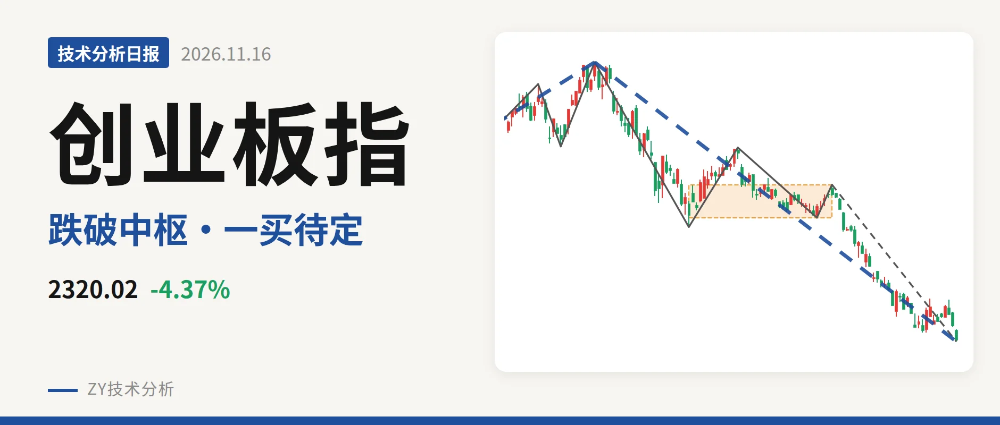
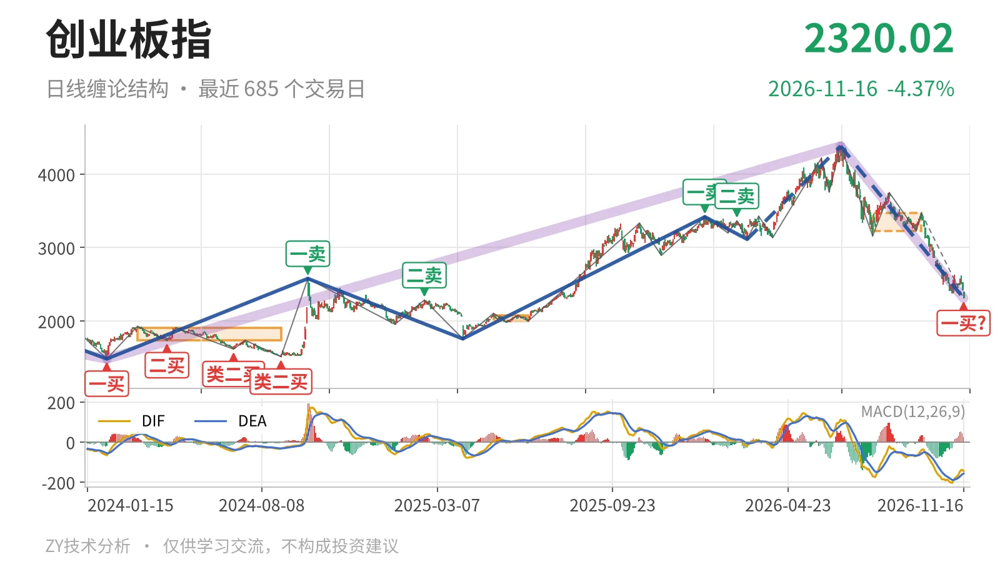
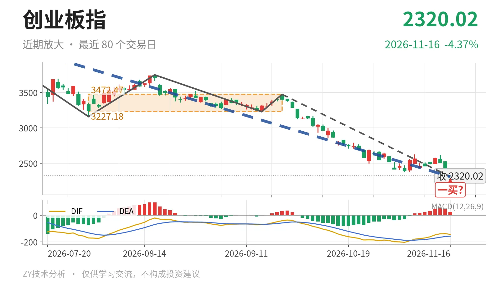

创业板指｜跌破3227点，一买2309待定

最近日线中枢 3227.18—3472.47点，收盘位于中枢之下
一句话：日线下跌段未结束，一买2308.90暂定，反抽不上3227点看三卖
🌊 走势结构：日线下跌段延续，不是中枢震荡
更大级别上，2024年2月5日至2026年6月25日从1482.99点涨到4380.41点的上涨段还没有结束；6月25日以来4380.41点到2308.90点的下跌段仍在延续。日线线段里，3月9日至6月25日3111.88点到4380.41点一段未见完结信号，但6月25日之后的回落已经走成日线线段，内含5笔，眼下也在延续。因此当前日线级别处在下跌段延续中，不是中枢震荡。

📍 中枢与位置：跌破3227.18点下沿约28.1%
最近日线笔中枢在7月30日至9月22日，区间3227.18—3472.47点，中轴3349.83点。最新收盘 2320.02点 低于下沿 3227.18点 约28.1%，属于向下离开。该中枢较2025年5月14日至2025年6月23日1996.96—2076.91点明显上移，但价格已经跌回其下沿之下，说明中枢上移后的回落幅度过大，反弹结构被破坏。
🎯 买卖点：2308.90点只是暂定一买
日线笔级别上，11月16日 2308.90点 出现一买，但它在9月22日至11月16日下跌笔内部，该笔还在延续，所以这个一买只是暂定的，会随这一笔延伸而变化。此前1月13日3416.84点的一卖、2月25日3363.18点的二卖一个比一个低，下跌结构未被扭转。线段级别上，3月9日3111.88点三买之后价格曾推到4380.41点，但当前已经低于该三买，买点后的上涨结构走弱。若后续再创2308.90点下方新低，这个一买就只对应更小级别，不构成日线一买。

⚖️ 背驰：面积缩小但DIF新低，底背驰未现
背驰看9月22日以来下跌笔对6月25日至7月30日下跌笔。后者绿柱面积1837，DIF低点-171.1；当前下跌笔绿柱面积1107，DIF低点-204.5。价格创了新低到2308.90点，绿柱面积没有同步放大，但DIF低点继续下移，所以不是“新低不新弱”，日线底背驰没有出现。DIF仍在零轴之下，当前笔还没结束，绿柱面积还在累积，力度未见明显收缩。
🧭 关键位置：反抽3227点定三卖，站上3472点才看扩展
反抽若回不到 3227点 上方，即7月30日至9月22日笔中枢下沿3227.18点，结构上构成三卖，6月25日以来下跌段仍会延续。重新站上 3472点，即该中枢上沿3472.47点，回落更可能只是中枢扩展，而不是向下离开。下方先看 2283点附近，即2022年4月27日至2023年8月4日线段中枢上沿2282.65点；再下看2122点附近，同一中枢下沿2122.32点。整体结构偏弱，弱在价格低于最近中枢下沿约28.1%，且DIF低点继续下移。
⚠️ 本文为基于公开行情数据的缠论技术结构记录，由程序自动计算并生成，仅供学习交流，不构成任何投资建议。市场有风险，投资需谨慎。